Artist profiles
Give members a clearer public-facing presence with profile cards, basic metadata, and a dedicated page to highlight work and identity.
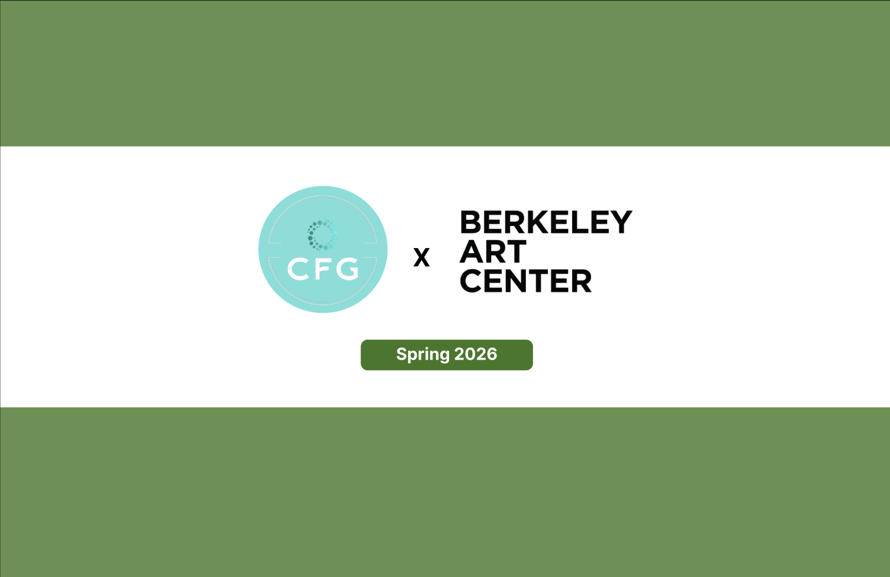
Web Dev, Backend
Context
This project creates artist profile pages for artists with Berkeley Art Center memberships, plus a bulletin board style page for community events and highlighted artwork.
Role
Project Manager
Duration
Janurary 2026 to May 2026
Team
Beste Karatas, Archana Srinivasan, Henry Adams, Jayden Lester, Joey Kamei, Julianna Martinez, Reva G, Sharon Ma
Tools
HTML, CSS, JavaScript, backend planning
Project Overview
Rather than redesigning the entire BAC website, our team narrowed the scope to two high-impact surfaces: an artist profiles page where members could be discovered more easily, and a bulletin board page for current exhibitions, opportunities, and community announcements.
As project manager, I helped organize the scope, guide the page direction, and connect the early brainstorming work to the final web flows we built.
Problem Space
The outline for this project pointed to a broader BAC goal: build a more user-friendly online platform ahead of the center’s 60th anniversary, one that could better showcase artists, surface events, and eventually support a richer archive of exhibitions and community activity.
Their existing experience did not make discovery or engagement feel especially dynamic, so we used this project to explore how member-facing pages could feel more curated, navigable, and alive.
Initial Brief
The first project notes were intentionally broad. BAC was interested in artist profiles, a more dynamic home page, deeper membership integration, and a better assessment of how their online platforms communicate with members, donors, and artists.
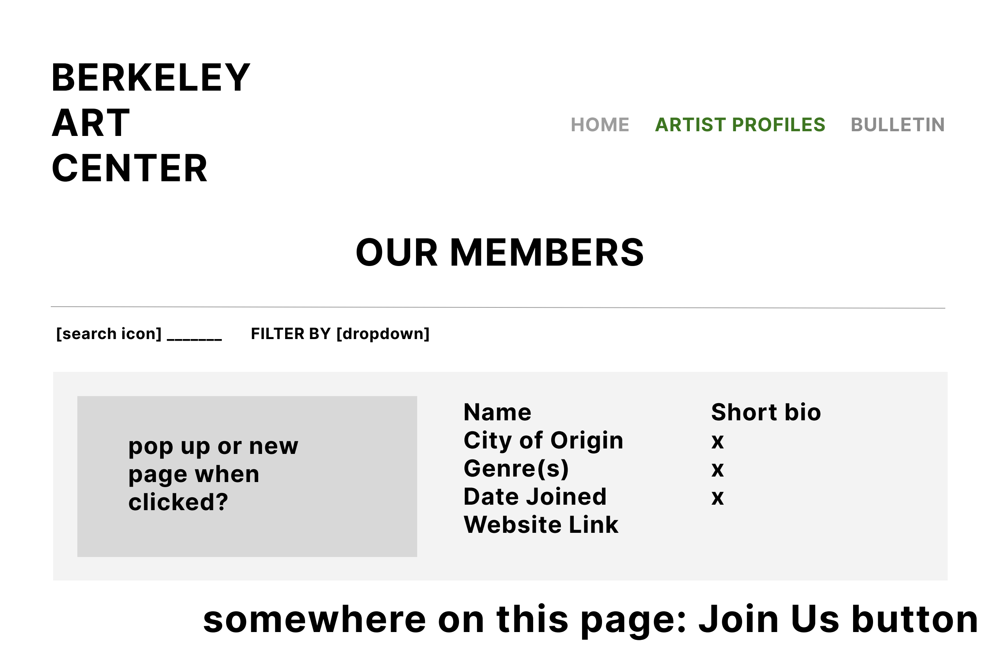
Concept Direction
Give members a clearer public-facing presence with profile cards, basic metadata, and a dedicated page to highlight work and identity.
Create a shared, current-feeling page for exhibitions, calls, and announcements that visitors could browse quickly without getting lost.
Keep the two pages visually linked so visitors could move between artists and events as part of one community ecosystem.
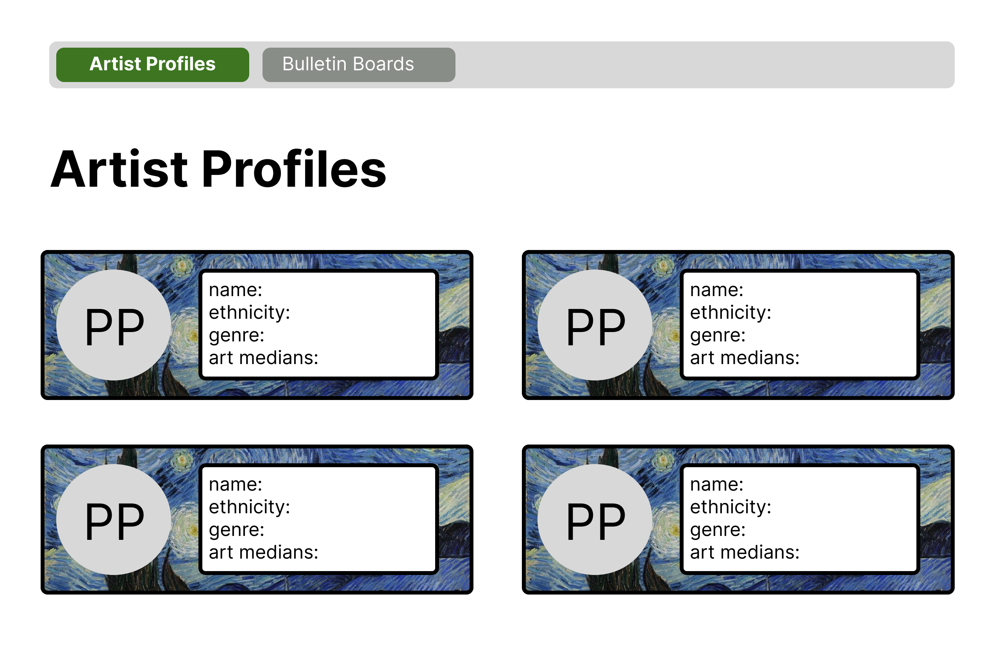
Low-Fi Exploration
Our earliest profile concepts were very structural. We tested a card system that could show profile imagery, name, ethnicity, genre, and artistic medium without overwhelming the page.
At this stage, the goal was not polish yet. It was deciding what belonged on the card, what could wait for the detailed profile page, and how the artist directory and bulletin board might sit alongside one another conceptually.
Artist Profile Detail
The next set of wireframes tested the transition from directory browsing into an individual artist page. These roughs included a larger feature image, a biography section, profile facts, tags, and space for highlighted works.
One important question in the wireframes was whether the detailed experience should open as a pop-up or a dedicated page. That design question shaped the final flow.
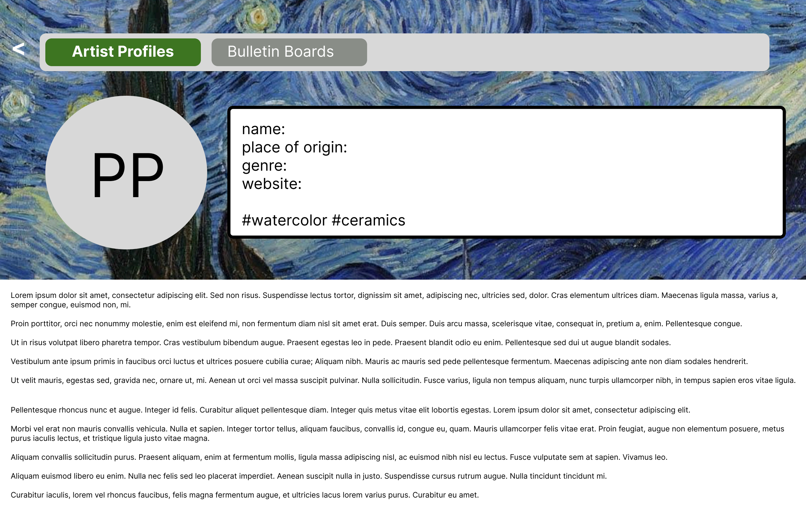
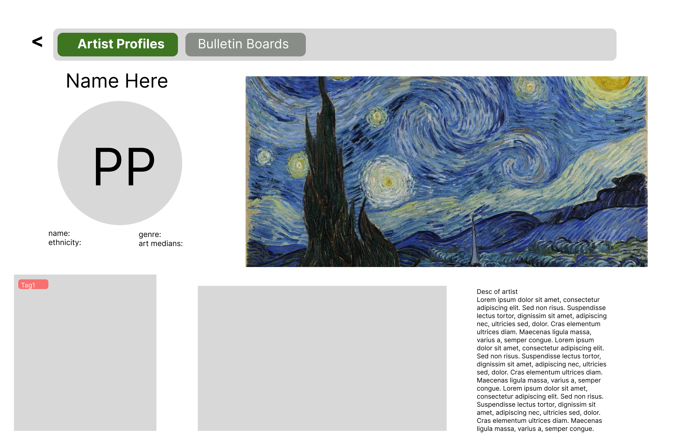
Artist Directory Structure
By mid-fidelity, the directory had a much clearer structure: a recognizable BAC header, search, filtering, and consistent card metadata like city of origin, genre, date joined, website link, and short bio. This moved the page from an idea board into something that could support actual discovery.
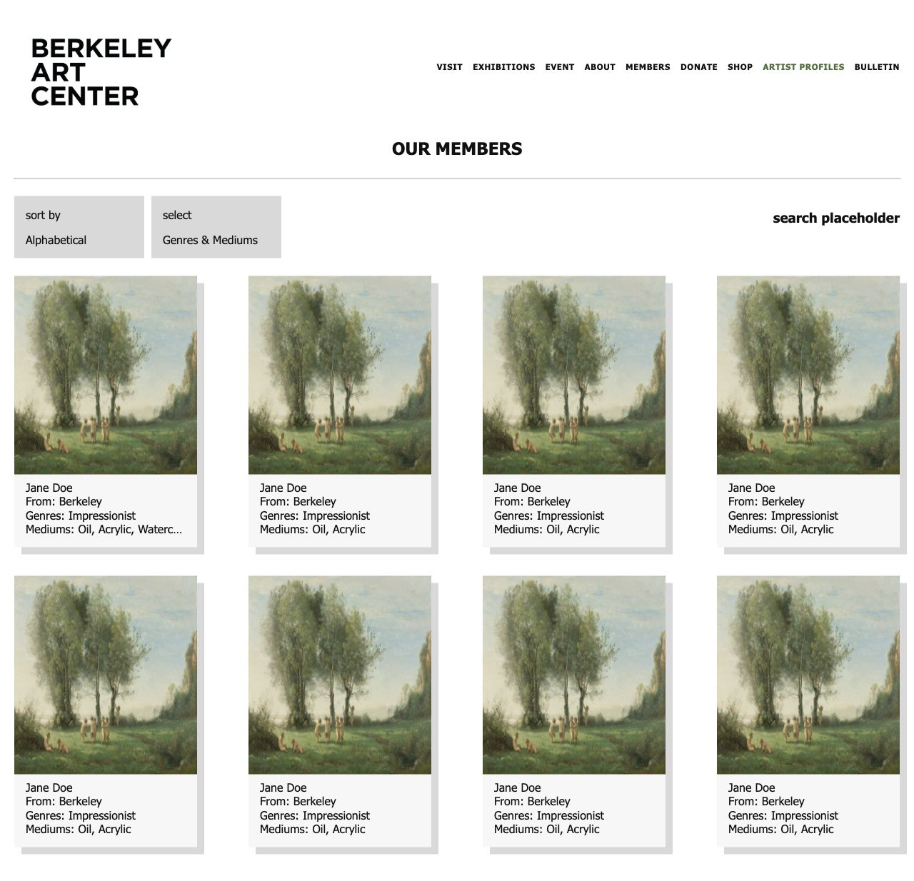
Final Artist Profiles Page
In the built version, the artist profiles page uses a card grid to make artists easier to scan visually. Search and filter controls sit at the top, and each card keeps the preview lightweight by surfacing only the essentials before users click through.
This final page keeps the directory feeling open and exploratory rather than dense or text-heavy.
Profile Flow
The final interaction answered one of the big low-fi questions directly: artist cards open into a full profile page. That choice gave us room for a stronger identity layout, a larger work area, and more breathing space for the bio and supporting content.
The profile page reinforces the idea that BAC members are not just items in a grid. Each artist gets their own destination page.
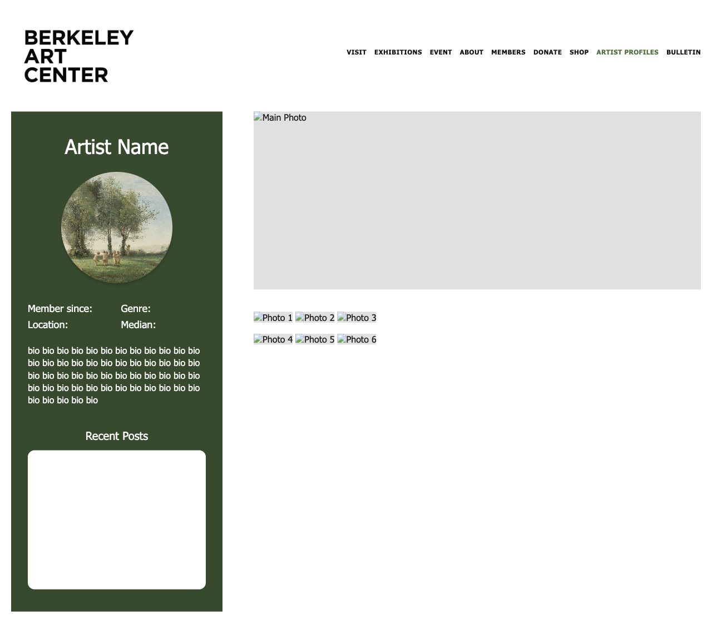
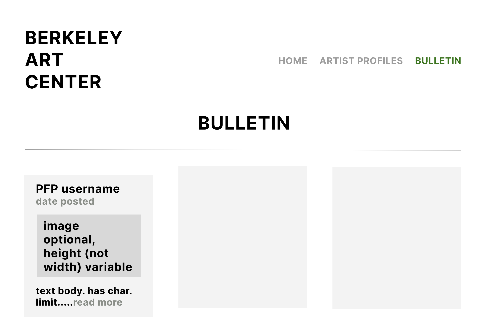
Bulletin Board Ideation
Early bulletin concepts were closer to a straightforward notice board with profile pictures, dates, optional images, and expandable post text. That established the core use case quickly: a place for opportunities, exhibitions, and announcements to live together.
As the concept matured, we began organizing posts by category and thinking more intentionally about spotlight content, archive behavior, and how visitors might browse over time.
Bulletin Board Refinement
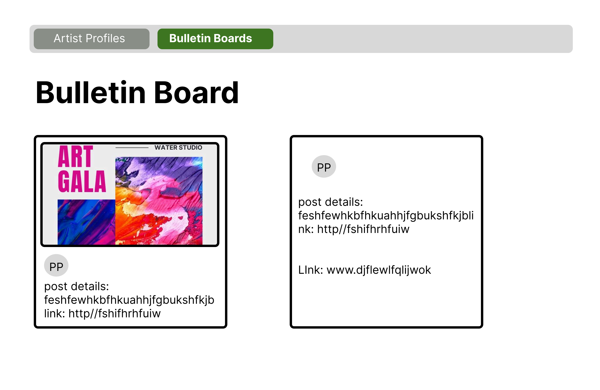
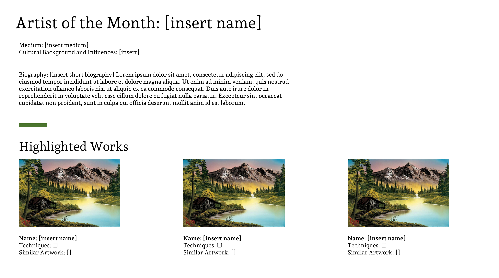
Across these iterations, the team moved from “a page with posts” toward a fuller content system: spotlight sections, categories like current exhibitions and opportunities, and a format that could eventually support archives and featured members.
Final Bulletin Board
The built bulletin page uses category chips, a spotlight area, a clear “create new posting” entry point, and a repeatable card system for different post types. That makes the page feel both current and structured.
It also gives BAC a way to balance highly visible current content with a longer runway for archives and recurring community updates.
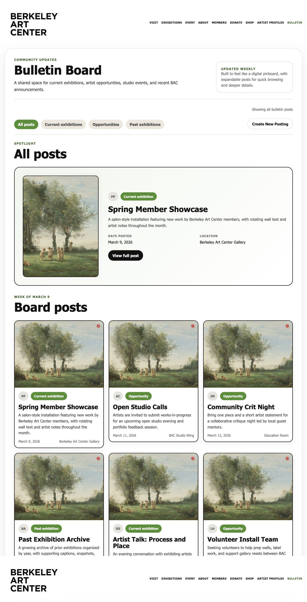
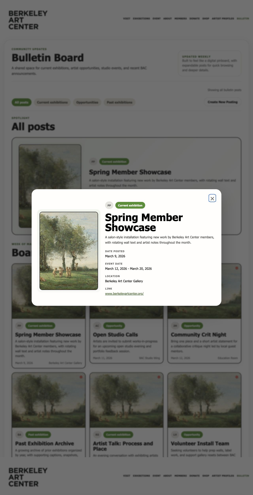
Interaction Flow
One of the strongest interaction choices in the final build is the expanded post view. From the board, users can open a detailed modal to read the full announcement, see the event date and location, and follow the included link.
That keeps the user oriented within the board while still allowing deeper content. It is a nice middle ground between quick scanning and full page detail.
Demo Flow
Visitors land on the artist directory, scan cards, and use search or filters to explore the member base.
Clicking a card opens a dedicated profile page with a larger visual layout, bio, and room for more contextual artist information.
On the bulletin board, visitors browse spotlighted items, filter post categories, and open a modal for more detailed event or opportunity information.
I was able to capture the flow as screenshots, but not as a built-in video export from the local app. If you send me a screen recording next, I can drop it directly into this section and write the caption around the exact interactions.
Takeaways
The biggest shift across the process was moving from very broad digital-platform ambitions into a pair of focused, realistic web experiences. The artist profiles page supports discovery and visibility for members, while the bulletin board supports timely, community-centered content.
Together, they create a stronger foundation for how Berkeley Art Center could present its people, events, and ongoing activity online.